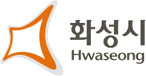
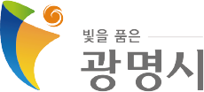
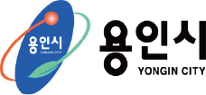
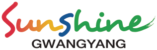
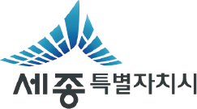
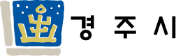
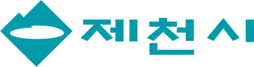
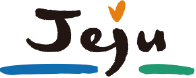

도로교통 전광판
#SL240M111
교통수단과 시설에 첨단 교통기술을 접목해 운영·관리를 자동화합니다. AI 딥러닝 기반으로 실시간 교통정보를 수집·가공해 교통혼잡을 방지합니다.
02위성항법장치로 운행 중인 버스 위치를 파악하고, 정류장과 차내 단말기에 도착 예정시간·운행노선을 문자와 음성으로 안내합니다.
03긴급차량이 응급환자를 이송할 때 GPS로 위치를 추적해, 교차로 진입 시 자동으로 녹색 신호를 부여합니다.
04어린이 보호구역 내 위험 상황을 LED전광판으로 알려 사고를 예방합니다. AI 영상분석으로 보행자를 감지합니다.
마우스를 올리면 제품 정보가 펼쳐집니다.
#SL240M111


#SL-BIT-TRI

#EL265


#SLv-001


#SL-P223ID5








전국 지자체와 기관에 상림기술의 시스템이 설치·운영되고 있습니다.